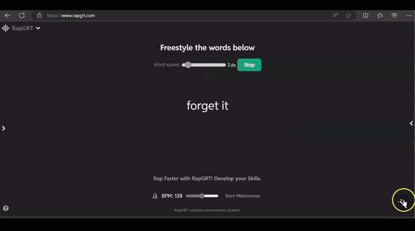
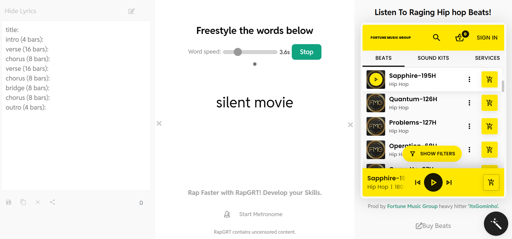
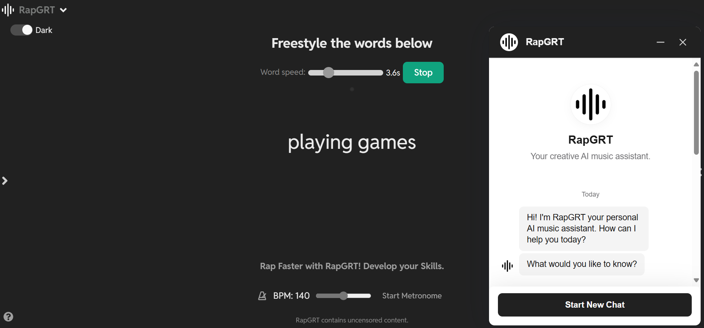
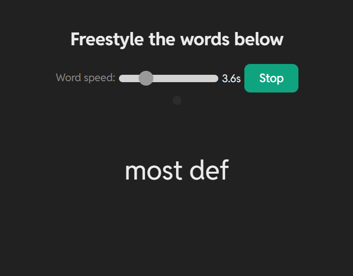
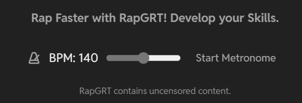

Read Docs: 'RapGRT'
Creative AI assistant for music artists
Full stack development documentation:
Summary, resources, limitations, privacy, security, notes and discussion
(Personal project)

Fig 1. RapGRT GIF of homescreen AI chatbot
Goal
Build a tool for music artists that help streamline idea creation and workflow utilizing full stack development and AI machine learning capabilities. #ArtificialintelligenceartWhat's it made of?
1. Notepad2. Beats playlist
3. Freestyle rapword generator
4. Large-language-model + GPT AI chat
5. Metronome (desktop feature only)

Fig 2. RapGRT in light theme - You can listen to beats and write lyrics while generating rap words to freestyle with.

Fig 3. RapGRT in dark theme - Music artists can gain further streamlined workflow by using our Creative AI assistant with up to date knowledge base.


Fig 4. If users do not wish to listen to music, they can instead streamline their focus on developing the skills to rap faster and staying on pace by adjusting the Word Speed parameter and selecting the metronome to adjust the bpm pace with the rap generator.
What’s it do?
Allows musicians and artists to streamline their workflow by emphasizing 3 main components:
- Idea generation
- Text generation
- Audio playlisting
Artists typically listen to beats while writing music. They like to have ideas generating while writing and listening to music. Artists, typically male artists, in group settings tend to freestyle and want ideas spun up to rap on in topic. RapGRT allows for all components of workflow combined into one simple UI.
Environments
- VS Code
- Jupyter Notebook
Frameworks (frontend UI)
- Vite+React
Server (backend)
- Flask API
Languages
- JavaScript
- JSX (JavaScript XML)
- HTML
- CSS
- Python
Resources
- OpenAPI
- OpenAI
- Huggingface dedicated endpoints
Models
- GPT-4o
- GPT-3.5 Turbo
- Llama-3
- Dolphin-2.9
Benefits
- Production deployable chat box widget backed by LLM and GPT capabilities
- System knowledge customization and fine-tuning
- Anonymous data retrieval for model fine-tuning
Limitations
- API server costs, Virtual Machines, Cloud deployments, and GPUs can be costly depending on your provider and setup. Be sure to note this.
Privacy & Security
- Please view the privacy policy here.
Last updated: 07/06/2024